2009
Vacanze a casa
04-01-2009
Queste vacanze di Natale purtroppo sono state un pò sfortunate....Margherita si è presa la bronchite poverina , papà l'influenza, io la febbre e mamma l'ascesso! Insomma speriamo solo che il nuovo anno sia un pò più ricco di salute! :)
Però a casa ho fatto tanti lavoretti con papà..abbiamo ritagliato il cartone e fatto le maschere, abbiamo cucinato, fatto la carta pesta

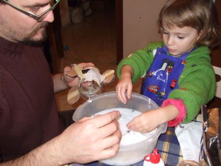
abbiamo suonato il piano
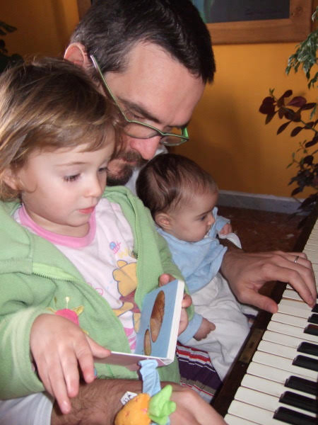
e ci siamo coccolate con Marghe
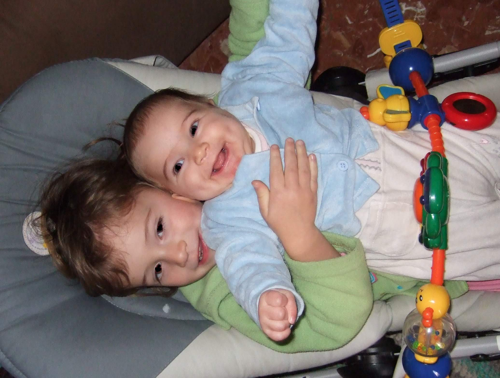
e ogni tanto lei ci guardava ciucciandosi le manine! 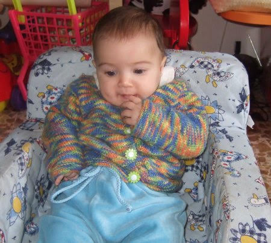
La befana vien di notte....
07-01-2009
...è proprio vero! Sofia ed io ci stavamo preparando una bella cenetta, sugo di pomodoro,
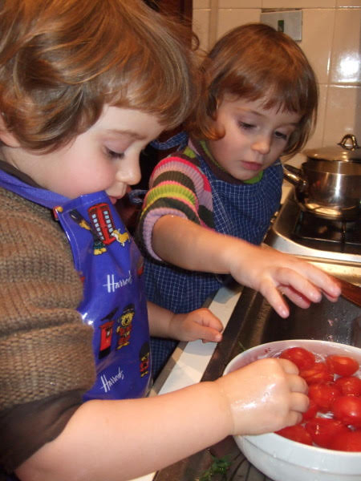
quando abbiamo sentito un rumore provenire dal caminetto....allora siamo salite su e abbiamo trovato due calze appese e un grosso regalo....era passata la befana!!
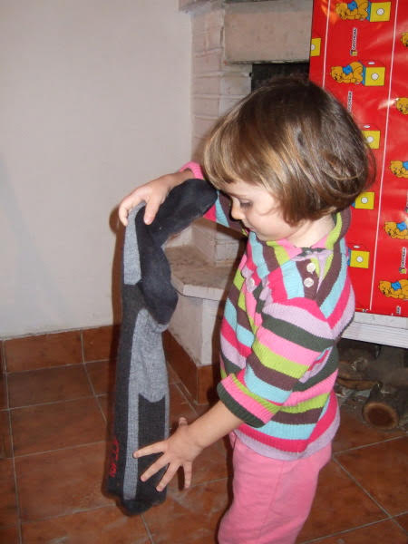
nelle calze c'erano un pò di dolcetti, e niente carbone, mentre il regalo erano i 'chiodini'
Dopo tanta pioggia...
18-01-2009
ecco una giornata quasi primaverile, e ne approfitto per fare una bella passeggiata al lago con le mie amichette! Dopo affamate ci siamo sedute con i piedi sotto il tavolino e un bel sole caldo sulla schiena....
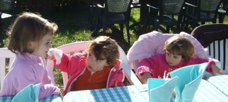
e abbiamo mangiato...chi più e chi meno...
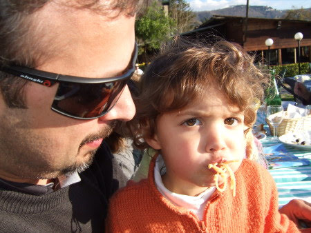
e poi abbiamo fatto un pò di ginnastica con il maestro Enrico e la sua assistente Nicole!
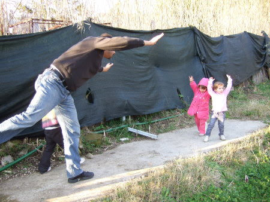
Ciao nonni :)
19-01-2009
Màrghere non piangere che i nonni tornano presto....sono andati in India...dai che la prossima volta ci andiamo anche noi!
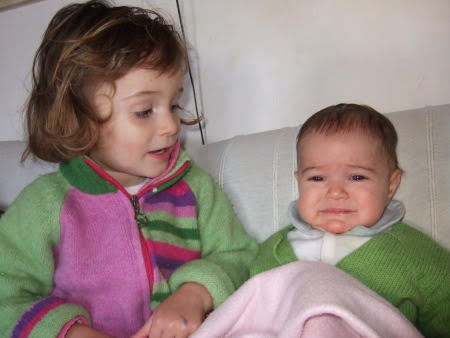
Coccole e morsi
19-01-2009
Paciocchi è una coccolona e le piacciono i baci di mamma
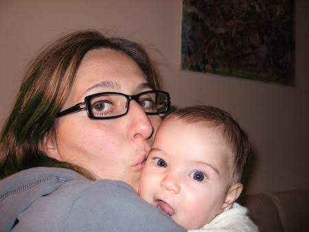
ma poi ogni tanto quando ha fame se la mangia!

La prima risata
27-01-2009
Oggi Màrghere ha fatto la sua prima vera risata sonora....che carina!
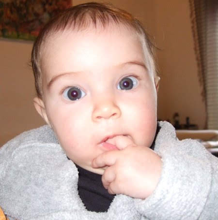
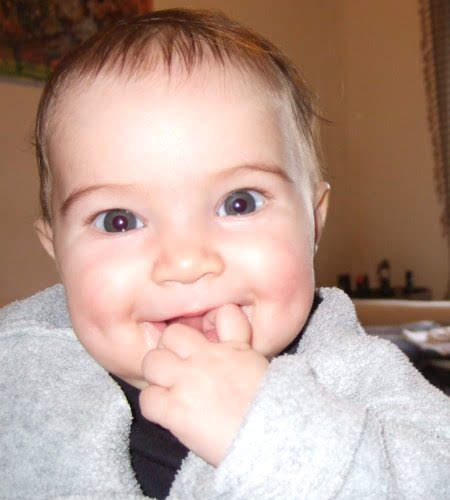
E' iniziato il carnevale
02-02-2009
Stavamo facendo una bella passeggata al mare....bhè la novità è che Caterina inizia a fare i primi passi :)
...
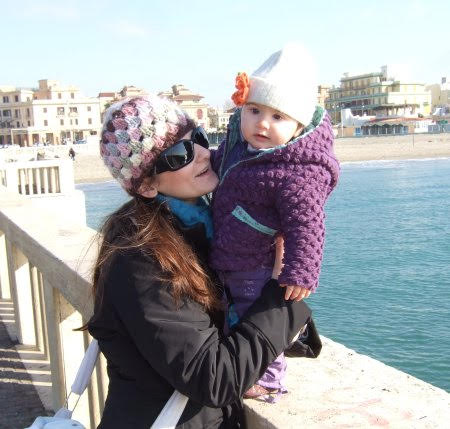
quando abbiamo visto tanti bambini vestiti in maschera! Ho tirato tanti coriandoli
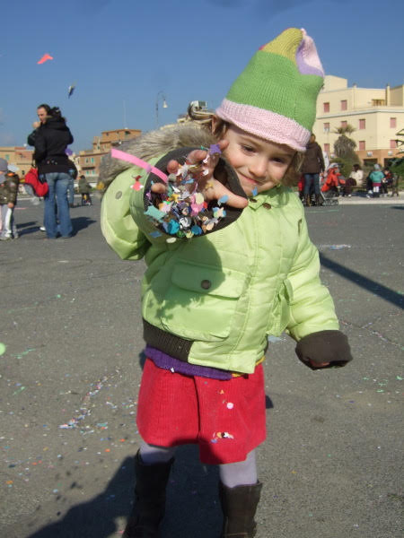
e poi frugando tra i miei giochi a casa ho trovato un bel vestitino da Trilli che ho subito sfoggiato!
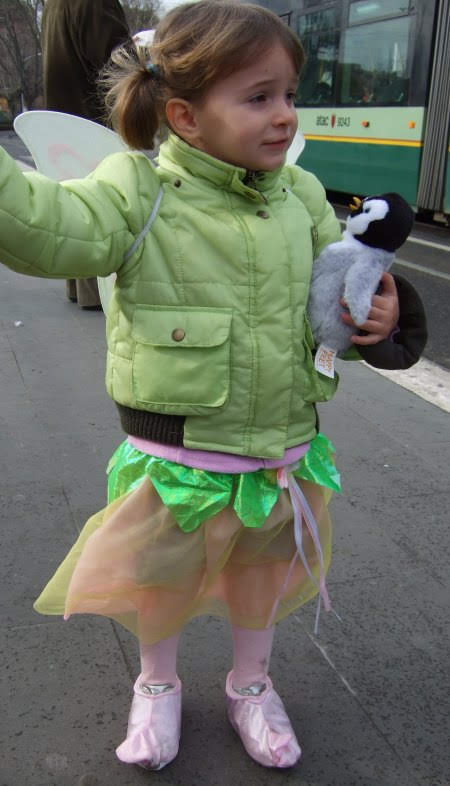
Come sto?Sono convincente come fatina?
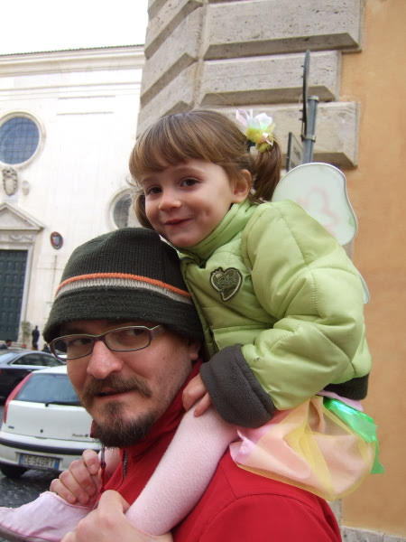
Scene di vita metropolitana
02-02-2009
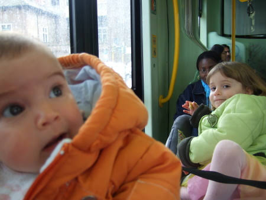
Un pensiero dal deserto indiano
09-02-2009
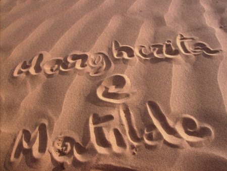
nonna Lilli, nonno Gianni e zia Maria
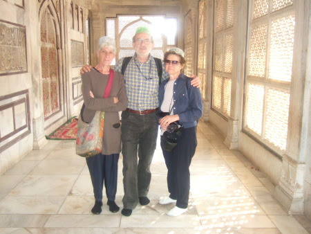
Ciao Chicca
11-02-2009
Oggi Chicchina è andata nel paradiso dei cagnetti. In questo momento starà correndo felice tra i fiori. Addio cucciola e grazie per averci dato 17 anni di felicità!
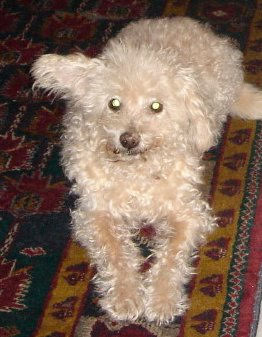
"Il cagnetto tuo?"
12-02-2009
Lui è Morgan, il cagnetto di zia Giorgia!E' bellissimo vero?
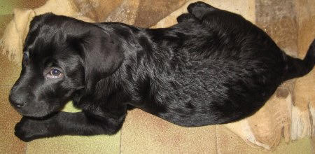
e mordicchia sempre zia con quei dentini aguzzi!Non vedo l'ora di conoscerlo :)
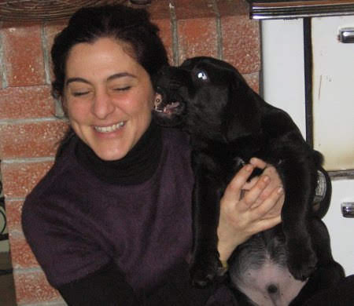
Carnevale: nonna Franca style
15-02-2009
Il genio creativo-pratico di nonna Franca ha ideato e prodotto in poche ore queste bellissime mascherine:
Cate-mela: rotonda e avventuriera
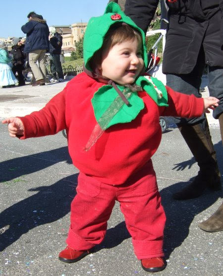
Marghe-marghe: romantica ma un pò addormentata

Mati-maia: classica e peperina

Siamo andati al pontile di Ostia: c'erano tantissimi bimbi in maschera e abbiamo anche incontrato Alice che forse era vestita da fiocco di neve rosa :)
(?)
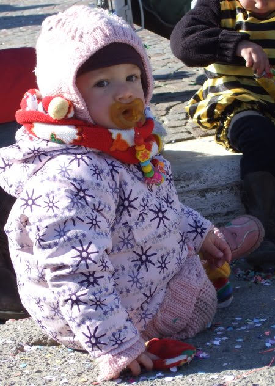
Io mi sono divertita a spruzzare le stelle filanti spray....
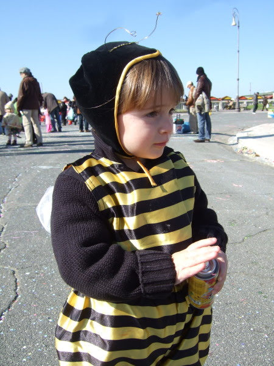
.....oooops forse devo perfezionare la mira!
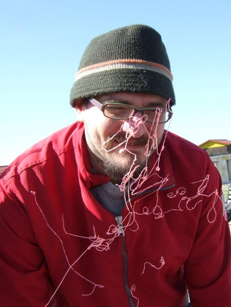
Sabato grasso: tutti in maschera
22-02-2009
Una bella festa in campagna a casa di don Vittorio con la mia amichetta Sofia....

e anche M&P si sono mascherati, da albero e da papavero
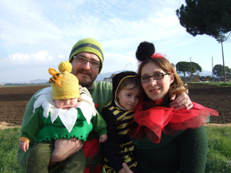
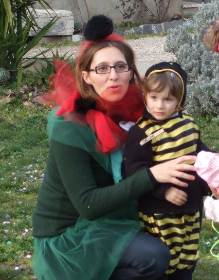
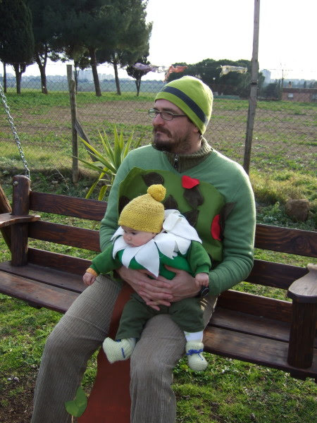
Gita fuori porta: Ciciliano
23-02-2009
In attesa della festicciola di compleanno di Giulia siamo stati a visitare un paesino molto carino alle porte di roma. Finalmente due passi al sole! Sia Marghe che io eravamo elegantissime! :)
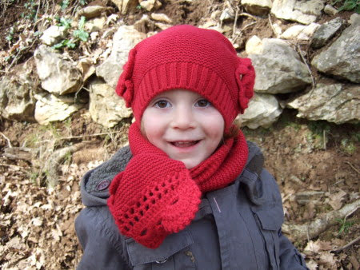
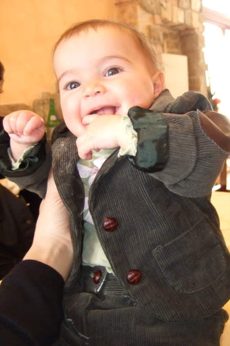
Sabato bucolico e solforoso!
01-03-2009
Ebbene si, sfruttando i rari sabati di sole, eccoci qui in campagna dai nonni.
Marghe sperimenta il prato
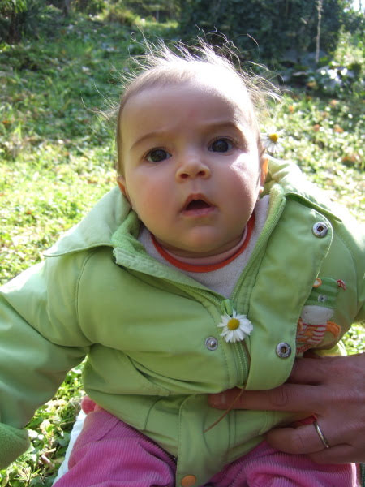
e le piace
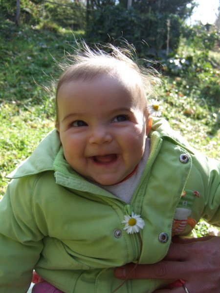
ma le piace anche stare sulla pancia di P :)
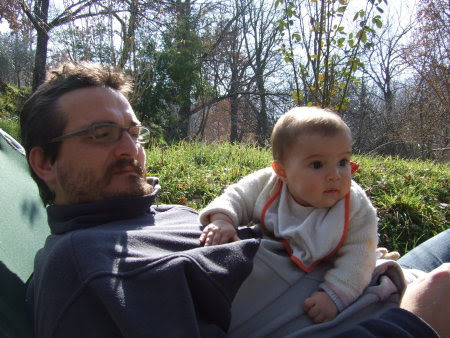
mentre io girovago
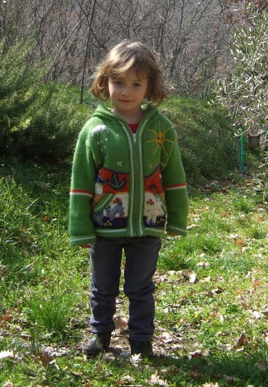
e faccio l'altalena
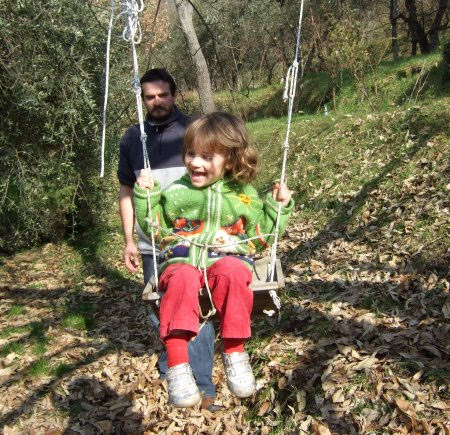
Poi siamo andati a fare un tuffo alle terme...a Marghe è piaciuta tanto l'acqua calda...non voleva più uscire
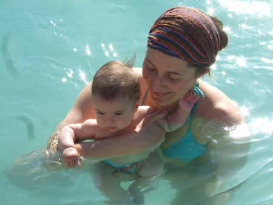
ci siamo divertite insieme!
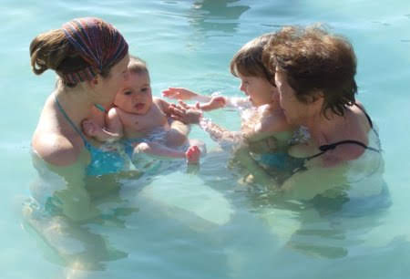
....e che pennica dopo il bagno nell'acqua calda! :)
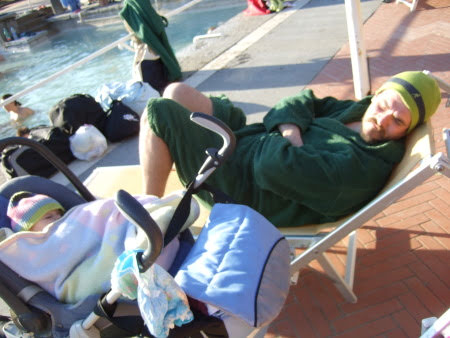
Primavera alla Caffarella
09-03-2009
Che giornata primaverile oggi!Abbiamo fatto un bel pic nic al parco della Caffarella con tutti i nonni e la bionna.
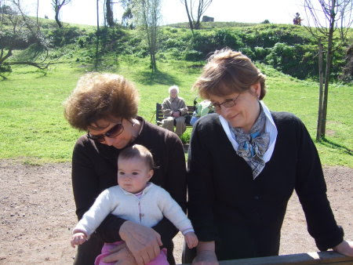
Si stava davvero bene, ad un certo punto mi sono anche levata le scarpe e sono andata a piedi nudi sul prato! La "solita selvaggia" dicono M&P :)
Ho fatto l'hula hoop con Sofia
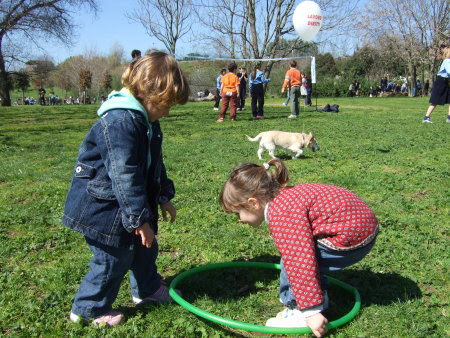
ho giocato alla corda con la bionna,che è più brava di me a saltare!

poi ho fatto l'altalena con Marghe

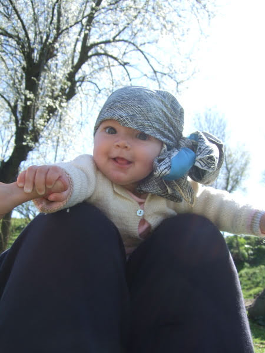

Buon Compleanno Caterina!!
17-03-2009
Tanti auguri alla cuginetta Cate per il suo primo anno!!
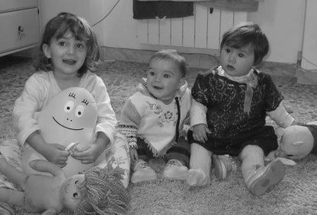
Come cresce!
20-03-2009
Come cresce questa sorellina....adesso sta seduta da sola sul tappeto....
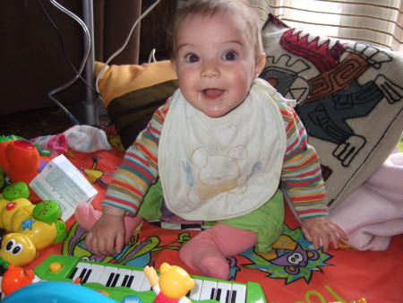
sul seggiolone....
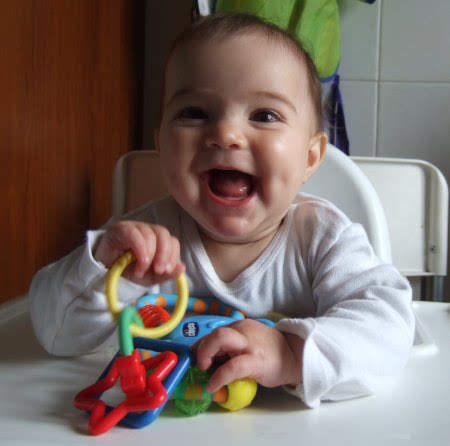
e ha anche iniziato a fare le pappe! Non ama molto la sbobba che le da mamma ma se ci mette anche la frutta la mangia di gusto!

... e facciamo anche il bagnetto insieme! (anche se ancora lei è un pò perplessa :)
)
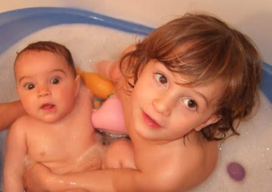
Auguri zia Betta e Cate
22-03-2009
Buon compleanno zia e buona festa di Cate!
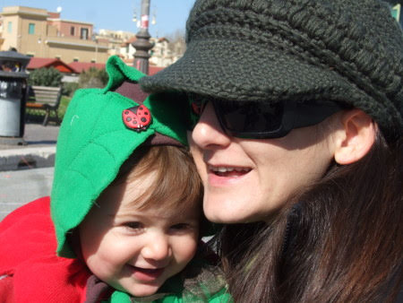
1/2 anno di Marghe!
24-03-2009
Auguri sorellina per il tuo mezzo anno!!
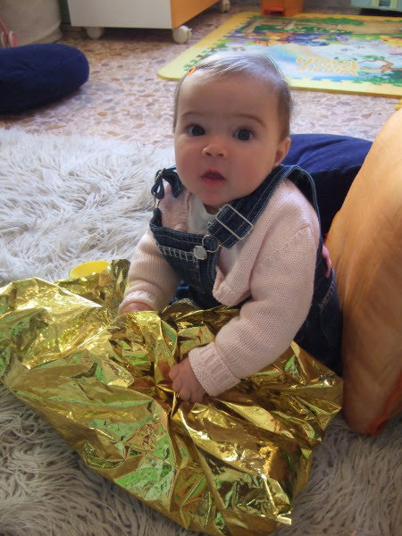
ho colorato un bel fiore per te!
Auguri papà mio
28-03-2009
Buon compleanno dalle tue donne!
Al campo di nonno Mario
30-03-2009
Una bella giornata al campo di nonno insieme a Marghe

a M&P
e a quella birba di Martina con cui mi nascondevo nell'erba!
A Viterbo da nonno Gianni
01-04-2009
Oggi niente asilo, vado in campagna! Ho raccolto la legna per la stufa con nonno

poi ho giocato con nonna e Marghe

e ho messo in fila i cinghialetti (gli unici rimasti con tutte e 4 le zampe!)
Buon compleanno pulce
02-04-2009
Buon compleanno amore mio... da una "splendida" stanza d'albergo a Bruxelless... e non è un pesce d'aprile!
e io a casa festeggio con le amiche e Matilde
Prima volta sull'altalena
04-04-2009
Oggi Marghe è andata per la prima volta da sola sull'altalena...e le è piaciuta!
Coda o non coda ....
05-04-2009
questo è il problema! Mamma dice che sembro una selvaggia con i capelli sciolti e disordinati

mentre invece con la coda sono tanto bella! Voi che ne dite?
Pasqua da zia Giorgia
15-04-2009
Finalmente rivedo zia Giorgia!Appena arrivati a Verezzi andiamo subito a fare una bella passeggiata nel bosco insieme al 'cagnetto tuo Morgàn'

Marghe ha raccolto gli asparagi con papà

e mamma e zia mi hanno sbaciucchiata!

Morgan, che tanto cagnetto non è, all'inizio mi faceva un pò paura con quel musone, ma poi ho imparato a giocarci insieme e a dirgli di stare a cuccia...e allora i nostri rapporti sono migliorati!Lui però è un pò monello....si è mangiato mezza torta di nocciole che aveva fatto nonna!

A Pasqua abbiamo aperto le uova, sia io che Marghe
e a Pasquetta siamo stati prima al mare
poi a pranzo da Sem
e poi nel bosco, dove zia Maria e Giorgia hanno fatto una prova di arrampicata insieme a Max! WOW che coraggiose...appena cresco un pò ci provo anche io!
Benvenuta Maria Ginevra
16-04-2009
Oggi pomeriggio è nata la mia cuginetta Maria Ginevra!
Un bacio grande grande alla piccola (si fa per dire...4Kg)
, a mamma Cinzia, papà Miko e ai fratellini Giorgio e Gabriele!
-30 giorni!
18-04-2009
"Mamma ma Alessia sta anche nella pancia di Lorenzo?" ... "No solo nella pancia di Mara"...e che pancia!! :)
forza piccolina che siamo tutti curiosi di conoscerti!
Antonella e Alberto....oggi sposi!
19-04-2009
Evviva gli sposi....e noi tutti eleganti per l'occasione!
Vincere senza sconfitti ...
29-04-2009
| "Questa mania occidentale e aristotelica di distinguere il bianco dal nero, il buono dal brutto forse non è esattamente l'aspirazione profonda dell'anima umana. Sono contrario alle vittorie, cui corrispondono una o molteplici sconfitte..." F. De AndrèC'hai convinto! |  |
Iniziamo a giocare insieme
29-04-2009
Finalmente il mare
05-05-2009
Accampamento al km 23 della litoranea di Sabaudia!

la giornata inizia con una bella passeggiata in bici ...obiettivo la colazione!

e mentre i grandi chiaccherano e si godono il cappuccino io mi diletto con una delle mie passioni, mettere tutto rigorosamente in fila!

poi c'è chi vola sulle dune, chi fa amicizia con la sabbia e ne mangia anche un pò...
chi gioca con quel cucciolone instancabile di Pedro
e con quel mattacchione di P
E poi per concludere la giornata una cena improvvisata nell'hangar di Giancarlo insieme al suo aereo....ha detto che quando voglio mi ci fa fare un giro! WOW
Festa della mamma
11-05-2009
" Ma tu perchè sei nonna? " " Perchè tu sei la mia nipotina! "
Matilde mi fa sempre gli scherzi!
15-05-2009
Ma dove è matilde?
eccola!!!
Sorelline con la tosse!
17-05-2009
Marghe ed io ci siamo prese proprio una bella tosse! Però facciamo l'aerosol insieme :)
Look estivo
17-05-2009
Ciao a tutti, prima di un drastico cambio di look abbiamo fatto un rito propiziatorio... la piramide umana
Manca solo mamma, magari ci proviamo la prossima volta!
Poi però bando alle ciance... colpi di forbice di papà mentre mamma mi distraeva. All'inzio ero un po' perplessa
... ma poi mi sono convinta... sto freschissima
Mamma e Matilde in bici!
18-05-2009
Oggi io e mamma siamo state tutto il giorno insieme lasciando papà e Marghe a casa! (Marghe poverina ha la febbre!)
Abbiamo preso la bici e siamo andate alla fermata del trenino! Quanto mi piace andare sul treno!
siamo scese al capolinea, ma a me sarebbe piaciuto fare ancora qualche fermata! E ci siamo ritrovate in mezzo a tantissime persone che correvano, passeggiavano, andavano in bici a Caracalla per la Race for the Cure. Dentro lo stadio ho saltato sul tappetone del salto in alto
e poi ho disegnato insieme a tanti altri bimbi

Faceva proprio caldo oggi!
Poi siamo state a pranzo da nonna Lilli, ho fatto un bel sonnetto e poi di nuovo a casa col treno!Che bella giornata!
E' nata Alessia
25-05-2009
Finalmente è nata la bellissima Alessia!

Tanti tanti auguri a mamma Mara e al felicissimo papà Lorenzo!
Tutti al mare!
25-05-2009
Questo we a Sabaudia ho fatto il primo bagno della stagione!L'acqua era bella ma un pò fresca....
a Pedro invece piaceva tantissimo
Marghe ed io abbiamo giocato insieme con la sabbia
poi abbiamo fatto tutti il bagno!
A pranzo, mentre Marghe rosicchiava il finocchio
abbiamo fatto una bella mangiata di telline appena pescate!

ne vado proprio matta!
Peccato che dopo questo bel we abbiamo avuto la disavventura di perdere le chiavi del camper...che poi io ho ritrovato nel seggiolino di Marghe!!
Anniversario in sicilia
08-06-2009
Per il primo anniversario di matrimonio di M&P siamo tornati in sicilia.Abbiamo preso l'aereo tutti e 4, all'inizio mi faceva un pò paura andare nelle nuvole e sentire quei rumori forti ma dopo mi è piaciuto tanto!Siamo stati a casa di Annagloria e Nicola e finalmente abbiamo conosciuto il piccolo Matteo...che bello che è...dicono che assomiglia a Krusty il clown :)

La loro casa ha tanti angoletti che mi piacciono....

e una piscina grande, che ancora non è finita, dove però mi sono divertita a giocare! Mamma e Annagloria sono state sempre a chiaccherare...chissà quante cose avevano da raccontarsi!
Una mattina sono andata con M alla pescheria e ho visto il pesce spada e poi ho conosciuto Manuela e la mia cuginetta triestina Maria Ginevra.
Abbiamo avuto qualche imprevisto di salute, tra la tosse la febbre e il catarro dalle orecchie di Marghe e le mie tonsille gonfie, che ci hanno permesso di testare il pronto soccorso siculo....bhè potrebbe esserci di peggio!Alla fine tutto si è risolto con antibiotici, cortisone e areosol!Certo è buffo....noi bimbi ci ammaliamo sempre in vacanza!!
Comunque la nostra vacanza è proseguita con nonna Lilli e nonno Gianni alla Masseria sul mare, dove si sta sempre bene e si dimentica tutto il resto!
Siamo stati in spiaggia, ma l'acqua era fredda fredda...tanto che anche nonna ha esitato a fare il bagno!

Marghe ed io ci siamo fatte delle belle passeggiate sulla spiaggia, abbiamo giocato con la sabbia e con le pallette di alghe
abbiamo mangiato la granita, rigorosamente alla mandorla, con la brioches
E poi, prima di partire, siamo stati a trovare Michela e Giovanni a Rondè (mmmm mi ricordava qualcosa quel posto)

ARRIVEDUAR all'anno prossimo sicilia :)

Una settimana di progressi!
16-06-2009
In questa settimana Marghe ha fatto tantissime cose nuove!
Martedì 9 ha iniziato a parlare...bhè dice BABABABABABA e poche altre variazioni sul tema
Venerdì 12 le è uscito il primo dentino
Lunedì 15 ha iniziato a gattonare seriamente
Sarà stata la presenza di zia Giorgia? :)
oppure la mia sorellina sta davvero diventando grande?
Finalmente conosco Alessia
20-06-2009
Dalla panciona di Mara è venuta fuori la piccola Alessia e a me piace tanto! Le ho dato tanti bacini....
...ma mai quanti gliene dà il suo papà Lorenzo!
Settimana al Circeo
21-06-2009
La settimana è iniziata con il matrimonio di Simone ed Eugenia, dove io e marghe sembravamo due principessine d'altri tempi

poi ci siamo trasferiti a casa di zia Aldina a S.Felice, dove c'erano anche i nonni e Caterina!
La mattina andiamo al mare in bicicletta con papà
giochiamo con la sabbia con nonno Mario che fa delle buche grandissime!

Cate ed io facciamo le smorfie a questo tempaccio che non è stato molto bello purtroppo
poi torniamo a casa, ci riposiamo e dopo facciamo il bagno nella piscinetta tutte e tre insieme
o andiamo al parco a giocare...e ci divertiamo tanto!
9 mesi di Marghe
24-06-2009
Marghe ha scoperto che le piace tanto l'albicocca....anche se ha qualche piccolo effetto collaterale! :)
per il suo complemese abbiamo organizzato un Pizza Party insieme agli amici 'australiani'
Compleanno di Sophie
28-06-2009
Sophie ha compiuto 3 anni e ha fatto una bella festa! AUGURI :)
In piscina con Simone
04-07-2009
In piscina ho incontrato Simone e abbiamo fatto insieme tanti tuffi!
A S. Nicola
05-07-2009
Le mie amichette si sono trasferite a S.Nicola in vacanza e Marghe ed io siamo andate a trovarle....siamo proprio tre scimmiette
|  |  |  |
In campeggio con Sofia
13-07-2009
Questo we sono stata in campeggio con Sofia a Montalto Marina
abbiamo fatto tante cose insieme: abbiamo giocato sulla spiaggia, siamo state in bicicletta in giro per il campeggio, abbiamo fatto il bagno in piscina
siamo state a ballare la sera, e ci hanno anche scambiate per gemelline!

Sofia è un pesciolino spericolato!
I saldi!
15-07-2009
Sono iniziati i saldi e Marghe non se li poteva perdere!! :)
Il teatrino
20-07-2009
Ho visto il teatrino di 'fagiolino' a villa Scipioni insieme a Sofia e Sonia... la trama era un pò complicata ma ci è piaciuto!
Il vero sonno!!
21-07-2009
'mamma' e 'papà'
23-07-2009
è ufficiale...Marghe sa dire consapevolmente sia mamma che papà, sa battere le manine, sa fare il leone e sa tirare la palla!!Brava sorellina!
Campeggio alla Giannella
03-08-2009
e rieccoci in campeggio insieme a Sofia ma stavolta vicino Talamone
La giornata inizia con giochi d'acqua
con gite in canoa alla ricerca di granchietti sugli scogli, abbiamo anche visto un paguro!
con risate e nuotate
con gita sul pattino
mentre qualcuna se la dorme alla grande!!
e si conclude con una bella braciolata!
Prima notte da sola
10-08-2009
M&P sono impegnati con il trasloco e io me ne vado in campagna dai nonni.Ho preso il treno con nonna Lilly e mi sono divertita, anche se le gallerie non mi sono piaciute perchè sono troppo rumorose.In campagna ho raccolto i lamponi e le more, ho aiutato a fare la salsa di pomodoro e a pulire i fagiolini e poi come premio sono anche andata alle terme!Certo mi è mancata un pò mamma ma ormai sono grande!

Calura!
13-08-2009
Nell'afa romana Margherita fa le prime nuotate con la ciambella
e Matilde, che ormai è grande, si trucca insieme alla sua amichetta Emma
Estate a Valdolmo
26-08-2009
Quest'estate alla ricerca di un pò di fresco siamo stai dai nonni a Valdomo.
Abbiamo fatto tante passeggiate

tante mangiate
tante risate
tanta ginnastica con mamma
giocato con tanti parenti
e soprattutto tanti tanti bei sonni :)

ciao casetta di Valdolmo

Festa di Compleanno!
08-09-2009
La mia prima festa di compleanno (perchè quest'anno il compleanno lo festeggerò diverse volte!)
è stata molto bella!Eravamo pochi...ma buoni e ci siamo divertiti!
Abbiamo gonfiato i palloncini
abbiamo giocato in giardino con una macchinetta buffa che faceva le bolle
poi abbiamo soffiato sulla candelina
e aperto i regali...ma eravamo tutte interessate ad uno in particolare...una meravigliosa cucina!
che è piaciuta tanto anche a Marghe!!
A fine serata, un pò stanche, Sophie ed io ci siamo rifugiate in un posto tranquillo
Buon compleanno amore mio!
08-09-2009
Oggi compi 3 anni cucciola di mamma!Auguri per un nuovo anno meraviglioso ricco di avventure, di amici e di serenità!
7 settembre
08-09-2009
Quest'anno è una giornata ancora più piena... oltre al compleanno di Matilde oggi è stato il primo giorno d'asilo di Margherita.

Auguri piccolette smorfiose!
Primo giorno di scuola (materna)
15-09-2009
Oggi inizio la scuola materna!
mi piacciono sia le maestre, a cui stranamente ho anche dato un bacio, e anche i bimbi!
e poi c'è una cucina bellissima nella mia classe! La sezione D
la sesta malattia
16-09-2009
ha colpito anche Marghe all'inizio dell'asilo!!
Febbrone da cavallo e bollicine....ma ormai è quasi passata!
Festa di compleanno bis
24-09-2009
Margherita si era addormentata per la sua festa di compleanno ... ma si è svegliata giusto in tempo per la torta!

Buon primo compleanno Margherita!!
24-09-2009
Oggi la mia sorellina compie un anno...è proprio grande!

La casa nuova!!
27-09-2009
Dopo le lunghe peripezie che vi sto per raccontare finalmente abbiamo la casa nuova e a me e Marghe piace tantissimo :)
- Marzo 2008: la vediamo e ce ne innamoriamo (anche se è tenuta un pò male)
- Aprile 2008: facciamo l'offerta ma ci fregano sul tempo....il nostro sogno si infrange
- Giugno 2008: la casa non viene più venduta (poi capiremo il perchè)
e ritorniamo all'assalto
- Agosto-Novembre 2008: rimettiamo a posto tutta la disastrosa situazione della casa (condoni, agibilità,proprietà del terrazzo, e tante altre)
- 27 Gennaio 2009: finalmente è tutta nostra!
- Aprile 2009: iniziano i lavori
- 10 Agosto 2009: il primo trasloco
- 26 Settempre 2009: finalmente la prima notte a casa!
Questa è la casa PRIMA dei lavori....


per vedere il DOPO....veniteci a trovare! ;)
Piccole mie!
30-09-2009
Sembra ieri quando vi tenevo in braccio accucciate a me con quella testolina piccola piccola e quelle manine e piedini minuscoli, gli occhietti gonfi, blu e semi chiusi, la pelle rosata e quell'odore pazzesco che fanno solo i neonati!
Ancora adesso ci coccoliamo nel lettone e quando dormite profondamente mi piace annusarvi e baciarvi, il vostro odore e il vostro sorriso sono la cosa più bella del mondo!

nonni...se non ci fossero
03-10-2009
.... bisognerebbe inventarli!!!
Nella giornata della festa dei nonni ...un piccolo tributo alla loro pazienza, amore, dedizione...e molto molto altro!
nonna Lilli

nonna Franca
bionna Maria
nonno Mario

nonno Gianni
Pranzo ufficiale a casa nuova!
06-10-2009
Questa domenica abbiamo fatto il primo pranzo ufficiale con brindisi nella casa nuova!

Marghe ha mangiato gli spaghetti
e io il mio tozzo di pane in tutto relax
e ho anche dato da mangiare a Marghe
poi abbiamo giocato con le grate...che sono divertenti sia aperte
che chiuse
e quando fa buio Marghe se ne va a zonzo col suo carrello
Pesi e Misure
13-10-2009
Bollettino del mese di ottobre:
MATILDE: altezza 99cm e peso 13,5Kg
MARGHERITA: altezza 75cm, peso 8,5Kg, 6 denti (3 sotto e 3 sopra)
Un tè con Alessia
18-10-2009
Ci è venuta a trovare Alessia per un tè in compagnia! Io e Marghe le abbiamo subito fatto provare il nostro mega cuscinone. Io mi buttavo sul cuscinone e lei rideva come una matta....e anche mamma Mara!
Visto come è cresciuta la piccola? sono prorio belle le nostre amiche vero?
E intanto anche Marghe inizia a tirarsi su in piedi da sola e a fare qualche passetto traballante!
Vicine vicine
23-10-2009
... a colazione...

.... e nel lettone ....
Il mio angolino
29-10-2009
questa casa nuova mi piace tanto e ho anche trovato un angolino per la lettura!
La mia famiglia...
03-11-2009
io la vedo così....

A casa con la tosse
08-11-2009
Marghe è stata a casa due settimane con la tosse poverina. Così per distrarla mentre fa l'aereosol abbiamo iniziato a guardare i cartoni dei Barbapapà.
e Leda le ha insegnato a giocare con la fattoria e a battere le mani quando sente la musica
....ma ancora più importante ... in questi giorni ha imparato finalmente a cammiare da sola !! E dice anche qualche parolina: acqua, no, basta, e molte altre cose incomprensibili! :)
Giochiamo con la bionna
09-11-2009
In questa domenica grigia e piovosa è venuta la bionna a rallegrarci.
Abbiamo giocato con i chiodini e colorato. La bionna disegna sempre i vasi di fiori e ha anche fatto il mio ritratto!
Poi P ci ha preparato un'ottima polenta e sono venuti a pranzo anche zio Angelo e Leda...e quella mangiona di Marghe ha gradito!!
Raccolta olive
17-11-2009
Quest'anno per l'annuale raccolta delle olive è venuta anche zia Giorgia insieme a Max e Morgan
ognuno con il suo rastrellino e al lavoro! Sofia è stata bravissima
mentre Morgan, nonostante il rastrello, le mangiava le olive!!
poi stanche del lavoro io, Marghe e Morgan ci siamo riposati un pò

in attesa del pranzo..ai fuochi c'è P.. e all'intrattenimento c'è Max!!

e dopo pranzo ancora relax sull'amaca per i piccoli
e il defogliatore anti-tress per i grandi!!
Grazie a tutti gli amici che sono venuti ad aiutarci: Sofia, Alice, Ivan, Sophie,
Nicole,Chiara, Davide, Ludvica ed Emilia e un arrivederci alla prossima raccolta!

All'asilo in bici
02-12-2009
Marghe, quando non è raffreddata, va a scuola in bici con P
e le piace, P dice che chiacchera e si guarda intorno tutto il tempo!
We di pioggia
02-12-2009
In questo grigio grigio we ho fatto tantissime cose:
ho tagliato tutte le verdure per il minestrone
ho aiutato M a preparare la torta
sono stata in piscina con Caterina

ho creato il calendario scrap con Sofia
e alla fine sono crollata esausta!!
Vestito di drago!
02-12-2009
Daniela e Giuseppe
02-12-2009
Finalmente sono venuti a trovarci nella casa nuova!!!
8 dicembre nelle Marche
09-12-2009
Siamo venuti a trovare la bionna Maria nelle Marche
e ci siamo portati anche quei due sbaciucchioni di Sonia e Giulio

e la mia amichetta Sofia con cui siamo andate a spasso per Fabriano e Frontone

e abbiamo fatto tanti lavoretti e giochi a casa a Valdolmo davanti al camino
Margherita si è abbuffata di tagliatelle fatte dalla bionna

e poi si è divertita al parco giochi con l'altalena

e pure mamma....anche se non ha ben capito come andava attraversato il ponte!!!
Alla prossima vacanza!
Festa di Natale all'asilo di Marghe
19-12-2009
La prima festa di natale all'asilo di Margherita è stata divertente! Le maestre hanno preparato tante cose carine: un albero di natale con le palline.... ma chi c'è nella palla?
una collezione di foto di tutti i bimbi della classe di Marghe... la mia sorellina è la più bella e sorridente!!!
e infine le calze cucite dai papà e dalle mamme piene di cosine buone!!
Marghe ed io abbiamo giocato un pò e poi ci siamo rilassate con M&P

Recita di Natale alla scuola di Matilde
23-12-2009
Finalmente il gran giorno della recita (anche se non sono molto entusiasta, forse l'emozione!)
... ma alla fine ecco tutti i genitori seduti....si apre il sipario....
ed eccoci qui a rappresentare la nascita di Gesù con tanto di capanna e pastorelli!
(grazie nonna Franca per il bellissimo costume)

poi un veloce cambio di scenografia e costumi, tra le lacrime emozionate dei genitori, e si riapre il sipario per i canti di natale!
Buon Natale a tutti!
24-12-2009

Giorni di festa
29-12-2009
Ecco cosa abbiamo fatto in questi giorni di festa: il 24 sera abbiamo avuto tutta la famiglia a cena da noi
c'era anche Caterina

e la mia sorellina Marghe
e dopo abbiamo aperto i regali che ci ha portato babbo natale! il 25 mattina abbiamo fatto una passeggiata in bici al parco (per inaugurare il mio nuovo regalo: il seggiolino per la bici da grandi!)

poi abbiamo tormentato Morgan (quella macchia nera sotto di noi è lui!)
e infine il 27 al mare a Ostia dove abbiamo giocato con la sabbia e Morgan si è fatto il bagno!